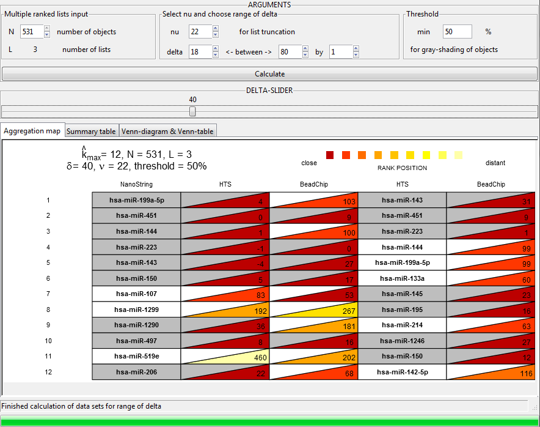

Using the R package TopKlists different ranked lists can be integrated given a common set of item identifiers. This show case illustrates how to integrate ranked lists derived from different miRNA abundance measurement techniques. The sample data is based on data available on GEO (Series GSE51508, Pubmed ID:24445778):
For more detailed information about the functions provided by TopKLists, please have a look at the package Vignette and the reference manual.
install.packages("TopKLists")
Once TopKlists has been installed, it can be loaded.
library(TopKLists)
res_51501 = read.table("data/GSE51501_results.txt", header=TRUE, quote="\"", stringsAsFactors=FALSE) res_51504 = read.table("data/GSE51504_results.txt", header=TRUE, quote="\"", stringsAsFactors=FALSE) res_51507 = read.table("data/GSE51507_results.txt", header=TRUE, quote="\"", stringsAsFactors=FALSE)
Next, missing values are removed.
res_51507 = res_51507[complete.cases(res_51507),] res_51501 = res_51501[complete.cases(res_51501),] res_51504 = res_51504[complete.cases(res_51504),]
As the final analysis should only consider items that are common to all three lists, we filter for these entries.
common = intersect(intersect(res_51501$mirname, res_51507$mirname), res_51504$mirname) length(common)
## [1] 531
We see that there are 531 common miRNAs left for further analysis. In the next step, each data set is reduced to contain the common items only. Then, we filter for the common entries and create a data.frame containing the common items ordered by their respective p-values.
res_51507_common = res_51507[res_51507$mirname %in% common,] res_51501_common = res_51501[res_51501$mirname %in% common,] res_51504_common = res_51504[res_51504$mirname %in% common,] data_common = data.frame(HTS = res_51507_common$mirname, BeadChip = res_51501_common$mirname, NanoString = res_51504_common$mirname, stringsAsFactors=FALSE) dim(data_common)
## [1] 531 3
head(data_common)
## HTS BeadChip NanoString ## 1 hsa-miR-143 hsa-miR-576-5p hsa-miR-199a-5p ## 2 hsa-miR-451 hsa-miR-490-5p hsa-miR-451 ## 3 hsa-miR-223 hsa-miR-139-5p hsa-miR-144 ## 4 hsa-miR-144 hsa-miR-223 hsa-miR-223 ## 5 hsa-miR-199a-5p hsa-miR-1233 hsa-miR-143 ## 6 hsa-miR-133a hsa-miR-1284 hsa-miR-150
TopKListsGUI(data_common)
## Warning: package 'RGtk2' was built under R version 3.0.3 ## Warning: package 'gWidgets' was built under R version 3.0.3
For the show case data, data exploration (see the TopKLists Vignette for explanation) lead to a choice of δ=40 and ν=22 for the inference. This resulted in a kmax of 12, at which the input lists were cut (see screenshot).

The TopKListsGUI Summary table already includes the aggregated miRNAs (denoted by asterisks) as a result of the Cross Entropy Monte Carlo (CEMC) function. To be able to obtain the optimized rank order of the miRNAs, and to compare the CEMC results when different distance measures are applied (Kendall's tau is the default method and is used in the GUI; Spearman's footrule is another option), one must execute the CEMC function from the console.
First, we estimate the overall list length k_max using the function j0.multi (for the selection of delta and nu see the Vignette),
set.seed(123) res = j0.multi(data_common, d=40, v=22)
The value of k_max is saved in res$maxK. Then we obtain partial lists by truncating the original full lists at that length and save them in a list object.
l1 = as.character(data_common[1:res$maxK,1]) l2 = as.character(data_common[1:res$maxK,2]) l3 = as.character(data_common[1:res$maxK,3]) input=list(l1,l2,l3)
Next, we need to define the underlying space (see the Vignette for an explanation); in this case as a union of all miRNAs present in all three lists.
common=unique(unlist(input)) space=list(common,common,common)
Finally, we can run the CEMC function for the two different distance measures. Because the union of all miRNAs only comprises 28 items, one has to increase the number of samples, N, in each iteration in the order of a few thousand (the other tuning parameters are set to their default values).
outCEMC.kendall = CEMC(input, space, dm = "k") outCEMC.spearman = CEMC(input, space, dm = "s")
print(sessionInfo())
## R version 3.0.2 (2013-09-25) ## Platform: x86_64-w64-mingw32/x64 (64-bit) ## ## locale: ## [1] LC_COLLATE=German_Austria.1252 LC_CTYPE=German_Austria.1252 ## [3] LC_MONETARY=German_Austria.1252 LC_NUMERIC=C ## [5] LC_TIME=German_Austria.1252 ## ## attached base packages: ## [1] grid stats graphics grDevices utils datasets methods ## [8] base ## ## other attached packages: ## [1] gWidgetsRGtk2_0.0-82 gWidgets_0.0-54 RGtk2_2.20.31 ## [4] knitr_1.6 permute_0.8-3 matrixcalc_1.0-3 ## [7] MASS_7.3-34 vcd_1.3-2 mc2d_0.1-14 ## [10] mvtnorm_1.0-0 RRHO_1.0.0 VennDiagram_1.6.7 ## [13] TopKLists_1.0.3 ## ## loaded via a namespace (and not attached): ## [1] bitops_1.0-6 caTools_1.17 cluster_1.15.3 ## [4] colorspace_1.2-4 evaluate_0.5.5 formatR_1.0 ## [7] Formula_1.1-2 gdata_2.13.3 gplots_2.14.1 ## [10] gtools_3.4.1 highr_0.3 Hmisc_3.14-4 ## [13] KernSmooth_2.23-12 lattice_0.20-29 latticeExtra_0.6-26 ## [16] RColorBrewer_1.0-5 splines_3.0.2 stringr_0.6.2 ## [19] survival_2.37-7 tools_3.0.2
Last update: Mon Oct 20 13:39:51 2014